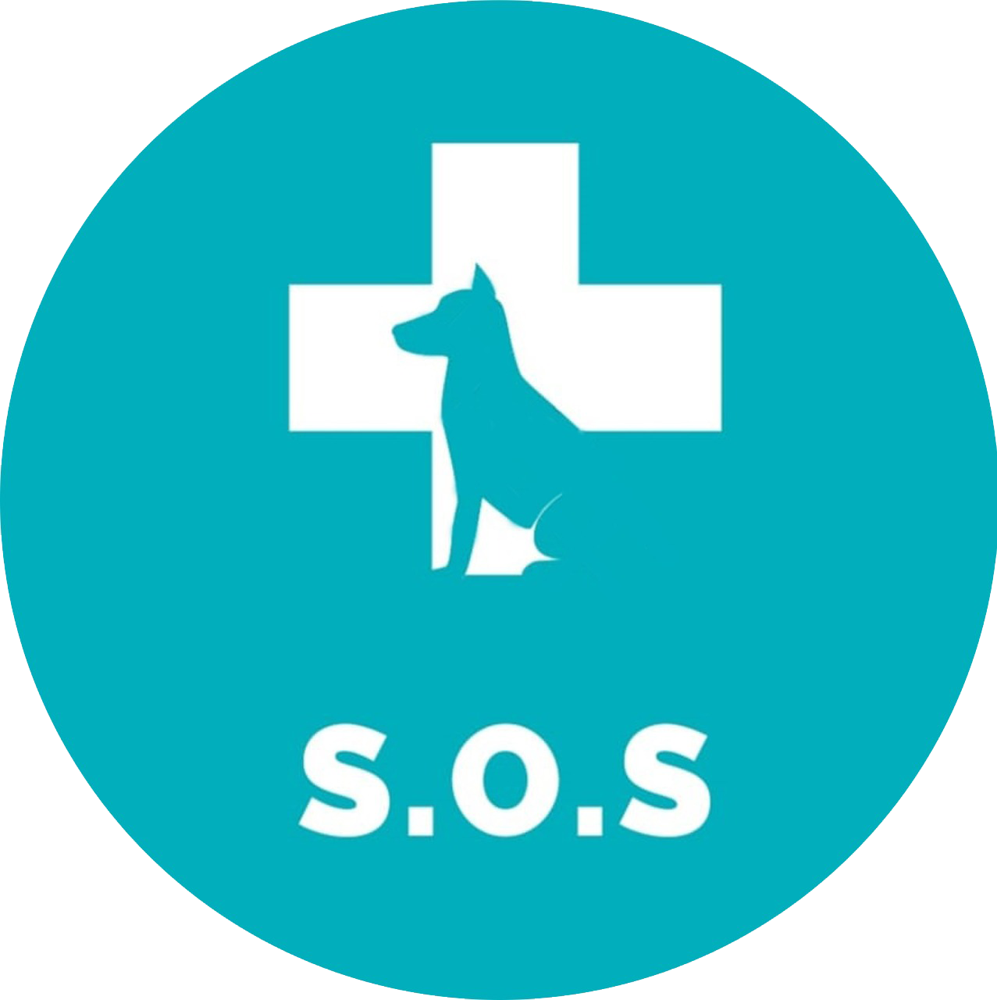

<ion-content [fullscreen]="true">
      
    <ion-searchbar [(ngModel)]="search" (ionChange)="searchChanged($event)" placeholder="Procurar veterinários" animated></ion-searchbar>
    <div #map id="map"></div>
  
  <ion-tabs>
    <ion-tab-bar color="favorite2" slot="bottom" lines="none">
      <ion-tab-button tab="perfil" (click)="carregarTela('perfil')">
        <ion-icon name="person-circle"></ion-icon>
        <ion-label>Perfil</ion-label>
      </ion-tab-button>
  
      <ion-tab-button tab="pet" (click)="carregarTela('pets')">
        <ion-icon name="paw"></ion-icon>
        <ion-label>Pet</ion-label>
      </ion-tab-button>

      <ion-tab-button tab="sos">
        <ion-icon class="sos" name="bag-add-outline"></ion-icon>
        <ion-label>SOS</ion-label>
      </ion-tab-button>
  
      <ion-tab-button tab="salvos" (click)="carregarTela('favorito')">
        <ion-icon name="star"></ion-icon>
        <ion-label>Salvos</ion-label>
      </ion-tab-button>
  
      <ion-tab-button tab="about" (click)="carregarTela('opcoes')">
        <ion-icon name="settings"></ion-icon>
        <ion-label>Opções</ion-label>
      </ion-tab-button>
    </ion-tab-bar>
  </ion-tabs>

  <ion-fab slot="fixed" vertical="bottom" horizontal="center" (click)="carregarTela('sos-page')">
    <ion-fab-button color="favorite"></ion-fab-button>
  </ion-fab>
  
</ion-content>